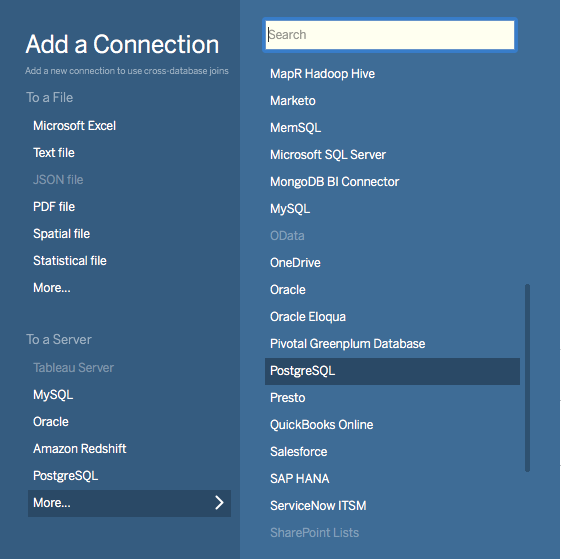
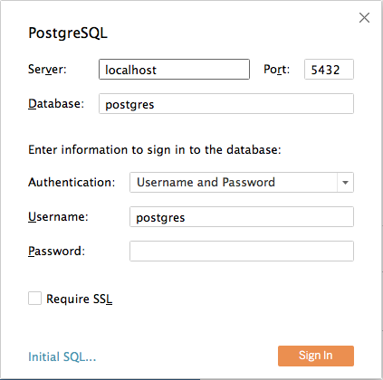

External Integrations
Ingesting Data from Kafka
Canopy can leverage existing LightDB data ingestion tools. For instance, we can use a tool called kafka-sink-pg-json to copy JSON messages from a Kafka topic into a database table. As a demonstration, we’ll create a kafka_test table and ingest data from the test topic with a custom mapping of JSON keys to table columns.
The easiest way to experiment with Kafka is using the Confluent platform, which includes Kafka, Zookeeper, and associated tools whose versions are verified to work together.
# we're using Confluent 2.0 for kafka-sink-pg-json support
curl -L http://packages.confluent.io/archive/2.0/confluent-2.0.0-2.11.7.tar.gz \
| tar zx
# Now get the jar and conf files for kafka-sink-pg-json
mkdir sink
curl -L https://github.com/justonedb/kafka-sink-pg-json/releases/download/v1.0.2/justone-jafka-sink-pg-json-1.0.zip -o sink.zip
unzip -d sink $_ && rm $_
The download of kafka-sink-pg-json contains some configuration files. We want to connect to the coordinator Canopy node, so we must edit the configuration file sink/justone-kafka-sink-pg-json-connector.properties:
# add to sink/justone-kafka-sink-pg-json-connector.properties
# the kafka topic we will use
topics=test
# db connection info
# use your own settings here
db.host=localhost:5432
db.database=postgres
db.username=lightdb
db.password=bar
# the schema and table we will use
db.schema=public
db.table=kafka_test
# the JSON keys, and columns to store them
db.json.parse=/@a,/@b
db.columns=a,b
Notice db.columns and db.json.parse. The elements of these lists match up, with the items in db.json.parse specifying where to find values inside incoming JSON objects.
Note
The paths in db.json.parse are written in a language that allows some flexibility in getting values out of JSON. Given the following JSON,
{
"identity":71293145,
"location": {
"latitude":51.5009449,
"longitude":-2.4773414
},
"acceleration":[0.01,0.0,0.0]
}
here are some example paths and what they match:
/@identity- the path to element 71293145./@location/@longitude- the path to element -2.4773414./@acceleration/#0- the path to element 0.01/@location- the path to element{"latitude":51.5009449, "longitude":-2.4773414}
Our own scenario is simple. Our events will be objects like {"a":1, "b":2}. The parser will pull those values into eponymous columns.
Now that the configuration file is set up, it’s time to prepare the database. Connect to the coordinator node with ltsql and run this:
-- create metadata tables for kafka-sink-pg-json
\i sink/install-justone-kafka-sink-pg-1.0.sql
-- create and distribute target ingestion table
create table kafka_test ( a int, b int );
select create_distributed_table('kafka_test', 'a');
Start the Kafka machinery:
# save some typing
export C=confluent-2.0.0
# start zookeeper
$C/bin/zookeeper-server-start \
$C/etc/kafka/zookeeper.properties
# start kafka server
$C/bin/kafka-server-start \
$C/etc/kafka/server.properties
# create the topic we'll be reading/writing
$C/bin/kafka-topics --create --zookeeper localhost:2181 \
--replication-factor 1 --partitions 1 \
--topic test
Run the ingestion program:
# the jar files for this are in "sink"
export CLASSPATH=$PWD/sink/*
# Watch for new events in topic and insert them
$C/bin/connect-standalone \
sink/justone-kafka-sink-pg-json-standalone.properties \
sink/justone-kafka-sink-pg-json-connector.properties
At this point Kafka-Connect is watching the test topic, and will parse events there and insert them into kafka_test. Let’s send an event from the command line.
echo '{"a":42,"b":12}' | \
$C/bin/kafka-console-producer --broker-list localhost:9092 --topic test
After a small delay the new row will show up in the database.
select * from kafka_test;
┌────┬────┐
│ a │ b │
├────┼────┤
│ 42 │ 12 │
└────┴────┘
Caveats
At the time of this writing, kafka-sink-pg-json requires Kafka version 0.9 or earlier.
The kafka-sink-pg-json connector config file does not provide a way to connect with SSL support.
A malformed JSON string in the Kafka topic will cause the tool to become stuck. Manual intervention in the topic is required to process more events.
Ingesting Data from Spark
People sometimes use Spark to transform Kafka data, such as by adding computed values. In this section we’ll see how to ingest Spark dataframes into a distributed Canopy table.
First let’s start a local Spark cluster. It has several moving parts, so the easiest way is to run the pieces with docker-compose.
wget https://raw.githubusercontent.com/gettyimages/docker-spark/master/docker-compose.yml
# this may require "sudo" depending on the docker daemon configuration
docker-compose up
To do the ingestion into LightDB, we’ll be writing custom Scala code. We’ll use the Scala Build Tool (SBT) to load dependencies and run our code, so download SBT and install it on your machine.
Next create a new directory for our project.
mkdir sparkcitus
Create a file called sparkcitus/build.sbt to tell SBT our project configuration, and add this:
// add this to build.sbt
name := "sparkcitus"
version := "1.0"
scalaVersion := "2.10.4"
resolvers ++= Seq(
"Maven Central" at "http://central.maven.org/maven2/"
)
libraryDependencies ++= Seq(
"org.apache.spark" %% "spark-core" % "2.2.1",
"org.apache.spark" %% "spark-sql" % "2.2.1",
"org.postgresql" % "postgresql" % "42.2.2"
)
Next create a helper Scala class for doing ingestion through JDBC. Add the following to sparkcitus/copy.scala:
import java.io.InputStream
import java.sql.DriverManager
import java.util.Properties
import org.apache.spark.sql.{DataFrame, Row}
import org.postgresql.copy.CopyManager
import org.postgresql.core.BaseConnection
object CopyHelper {
def rowsToInputStream(rows: Iterator[Row]): InputStream = {
val bytes: Iterator[Byte] = rows.map { row =>
(row.toSeq
.map { v =>
if (v == null) {
"""\N"""
} else {
"\"" + v.toString.replaceAll("\"", "\"\"") + "\""
}
}
.mkString("\t") + "\n").getBytes
}.flatten
new InputStream {
override def read(): Int =
if (bytes.hasNext) {
bytes.next & 0xff // make the signed byte an unsigned int
} else {
-1
}
}
}
def copyIn(url: String, df: DataFrame, table: String):Unit = {
var cols = df.columns.mkString(",")
df.foreachPartition { rows =>
val conn = DriverManager.getConnection(url)
try {
val cm = new CopyManager(conn.asInstanceOf[BaseConnection])
cm.copyIn(
s"COPY $table ($cols) " + """FROM STDIN WITH (NULL '\N', FORMAT CSV, DELIMITER E'\t')""",
rowsToInputStream(rows))
()
} finally {
conn.close()
}
}
}
}
Continuing the setup, save some sample data into people.json. Note the intentional lack of surrounding square brackets. Later we’ll create a Spark dataframe from the data.
{"name":"Tanya Rosenau" , "age": 24},
{"name":"Rocky Slay" , "age": 85},
{"name":"Tama Erdmann" , "age": 48},
{"name":"Jared Olivero" , "age": 42},
{"name":"Gudrun Shannon" , "age": 53},
{"name":"Quentin Yoon" , "age": 32},
{"name":"Yanira Huckstep" , "age": 53},
{"name":"Brendon Wesley" , "age": 19},
{"name":"Minda Nordeen" , "age": 79},
{"name":"Katina Woodell" , "age": 83},
{"name":"Nevada Mckinnon" , "age": 65},
{"name":"Georgine Mcbee" , "age": 56},
{"name":"Mittie Vanetten" , "age": 17},
{"name":"Lecia Boyett" , "age": 37},
{"name":"Tobias Mickel" , "age": 69},
{"name":"Jina Mccook" , "age": 82},
{"name":"Cassidy Turrell" , "age": 37},
{"name":"Cherly Skalski" , "age": 29},
{"name":"Reita Bey" , "age": 69},
{"name":"Keely Symes" , "age": 34}
Finally, create and distribute a table in Canopy:
create table spark_test ( name text, age integer );
select create_distributed_table('spark_test', 'name');
Now we’re ready to hook everything together. Start up sbt:
# run this in the sparkcitus directory
sbt
Once inside sbt, compile the project and then go into the “console” which is a Scala repl that loads our code and dependencies:
sbt:sparkcitus> compile
[success] Total time: 3 s
sbt:sparkcitus> console
[info] Starting scala interpreter...
scala>
Type these Scala commands into the console:
// inside the sbt scala interpreter
import org.apache.spark.sql.SparkSession
// open a session to the Spark cluster
val spark = SparkSession.builder().appName("sparkcitus").config("spark.master", "local").getOrCreate()
// load our sample data into Spark
val df = spark.read.json("people.json")
// this is a simple connection url (it assumes Canopy
// is running on localhost:5432), but more complicated
// JDBC urls differ subtly from LightDB urls, see:
// https://jdbc.postgresql.org/documentation/head/connect.html
val url = "jdbc:postgresql://localhost/postgres"
// ingest the data frame using our CopyHelper class
CopyHelper.copyIn(url, df, "spark_test")
This uses the CopyHelper to ingest the ionformation. At this point the data will appear in the distributed table.
Note
Our method of ingesting the dataframe is straightforward but doesn’t protect against Spark errors. Spark guarantees “at least once” semantics, i.e. a read error can cause a subsequent read to encounter previously seen data.
A more complicated, but robust, approach is to use the custom Spark partitioner spark-citus so that partitions match up exactly with Canopy shards. This allows running transactions directly on worker nodes which can rollback on read failure. See the presentation linked in that repository for more information.
Business Intelligence with Tableau
Tableau is a popular business intelligence and analytics tool for databases. Canopy and Tableau provide a seamless experience for performing ad-hoc reporting or analysis.
You can now interact with Tableau using the following steps.
Choose LightDB from the “Add a Connection” menu.
Enter the connection details for the coordinator node of your Canopy cluster.
Once you connect to Tableau, you will see the tables in your database. You can define your data source by dragging and dropping tables from the “Table” pane. Or, you can run a custom query through “New Custom SQL”.
You can create your own sheets by dragging and dropping dimensions, measures, and filters. You can also create an interactive user interface with Tableau. To do this, Tableau automatically chooses a date range over the data. Canopy can compute aggregations over this range in human real-time.